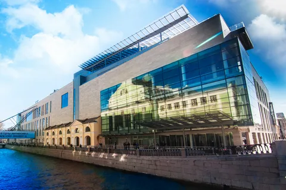
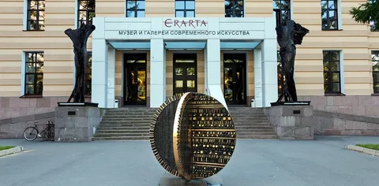

Здесь мы расскажем о второй столице нашей страны - городе Санкт-Петербурге.
Культура города.
Культура Петербурга хорошо проявляется не только в его жителях, архитектуре, музеях, но и в театрах, музыке.
Петербург задает тренды в исполнительском искусстве — от строгой классики до абсолютного авангарда.
Мариинский театр изображенный на первой фотографии главная балетная и оперная сцена страны. Историческая сцена — это атмосфера XIX века и роскошь, а Мариинка-2 со второго фото (Новая сцена) — это безупречная акустика и современный комфорт.


Театр им. Ленсовета.
Известен своими смелыми, порой экспериментальными интерпретациями классических пьес.


БДТ им. Товстоногова.
Сюда стоит идти за сильной современной режиссурой и глубокими драматическими постановками.


Туризм.
Музеев в которые можно сходить в городе, несомненно, много, однако можно выделить несколько.
Русский музей (Михайловский дворец).
Крупнейшее в мире собрание именно российского искусства. Здесь находятся оригиналы «Последнего дня Помпеи» Брюллова и «Девятого вала» Айвазовского.
.jfif)
внутри.jfif)
Главный штаб Эрмитажа.
Находится прямо напротив классического Эрмитажа, но внутри — совсем другой мир. Сюда перенесена потрясающая коллекция импрессионистов и постимпрессионистов (Моне, Пикассо, Матисс), а также залы современного искусства.


Эрарта.
Крупнейший частный музей современного искусства в России. Пять этажей живописи, скульптур, интерактивных инсталляций (U-Space) и видеоарта. Коллекция постоянно обновляется.


Арт-центр «Пушкинская, 10».
Колыбель петербургского андеграунда. Мекка для любителей неформальной культуры, где находится знаменитая улица Джона Леннона, Самиздат, независимые галереи и студии художников.


Экономика.
Ключевые отрасли:
- Обрабатывающая промышленность (Драйвер роста)
- Обеспечивает около 88% всей промышленной продукции города; индекс промышленного производства (ИПП) стабильно
опережает среднероссийские показатели.
- Тяжелое и энергетическое машиностроение: производство турбин, реакторов и оборудования («Силовые машины», Ижорские
заводы, Кировский завод).
- Судостроение: Санкт-Петербург — главная верфь страны (Адмиралтейские верфи, Балтийский завод, Северная верфь).
- Электроника и оптика: выпуск квантовой оптики, микросхем, систем навигации и медицинского приборостроения.
- Транспорт и логистика
- Главный транспортный узел на Северо-Западе России.
- Морской порт: крупнейший узел на Балтике для контейнерных и наливных грузов.
- Инфраструктурные хабы: аэропорт Пулково, разветвленная сеть железнодорожных узлов и трасса ЗСД (Западный скоростной
диаметр).
- Энергетика и сырьевой сектор
- Важнейший центр управления топливно-энергетическим комплексом страны.
- Здесь базируются штаб-квартира ПАО «Газпром» и крупнейшие структуры вроде «Газпром нефти», формирующие значительную
часть налоговых отчислений.
- Торговля и сфера услуг
- Внутренний оборот предприятий города более чем наполовину (56,5%) формируется за счет оптовой и розничной торговл
- Город служит базой для крупных федеральных ритейлеров (например, сети «Лента»).
- IT и инновационная экономика
- Доля вложений в объекты интеллектуальной собственности выросла почти в два раза до 9,8%.
- Благодаря сильным университетам (ИТМО, СПбПУ, СПбГУ), технопаркам и веб-разработке Петербург удерживает статус главного
технологического кластера страны после Москвы.
- Инвестиционный фокус
Наибольший объем внешних и внутренних инвестиций сегодня направляется в три приоритетные сферы:
- Транспортировка и хранение грузов: развитие складских терминалов и портовой инфраструктуры.
- Недвижимость: строительство новых жилых кварталов и масштабный редевелопмент «серого пояса».
- Фармацевтический кластер: производство жизненно важных лекарств и импортозамещение на площадках ОЭЗ «Санкт-Петербург».